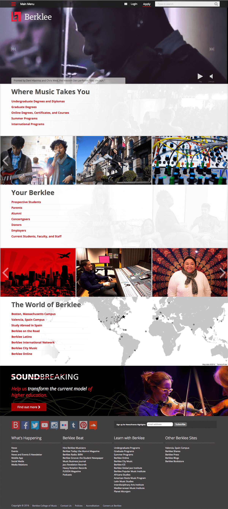

Hi.
I'm Raj, a coder and designer living in the Boston metro area. I'm looking for contract or part-time work that is 100% remote. If you represent a non-profit, or if your work is related to music, 3D printing, microchips/IoT (I use the Teensy), or casual games, then I'd especially like to hear from you. This is what I offer:
-
Code and Design
While I usually find myself employed as a front-end developer, I'm almost always utilized for back-end coding and design work as well. I'm known for being just as comfortable in Photoshop and Illustrator as I am in a text editor (currently enjoying Atom) or a terminal.
-
JavaScript Wizardry

With the rising popularity of Node.js, JavaScript is poised to be one of the most pervasive and flexible languages in use. It can be used to build back-ends (Node.js), asynchronous front-ends (React.js, Socket.io, Angular.js), cross-platform desktop apps (NW.js), and mobile devices (Cordova and JXCore). I specialize in JS, particularly Node.js and ECMAScript 2015, and I'm excited about the direction the language is headed.
-
CMS Theming and Module Development

I first began working with WordPress while working for an ad agency. It was easy to install, easy for clients to learn, and easy to modify. As the scope of my projects became more complex and as the organizations I worked for became larger and more complex as well, I began working with Drupal. I've since spent years writing themes (both base and child) and modules for Drupal.
-
Ruby on Rails Front-end Development
While I'm not a Rails expert, I've had the opportunity to work on several large Rails projects. Most recently, I designed and developed a complex front-end for Rails from the ground up using React.js.
-
Web Accessibility

I believe that the web is for everyone, and everyone benefits from a more accessible web. Changes to the web that benefit accessibility almost always have other benefits. Content that can be read by screen readers to the visually impaired can also be read by Siri to someone driving to work in the morning, for example. I test my work with Apple VoiceOver before publishing and I include users of screen readers in UX tests when possible.
-
Custom API interactions

Interacting with third-party data providers is part of the web we live in. I specialize in the custom development of tools/plugins/modules that push and pull data from Facebook, Instagram, Twitter, Vimeo, Flickr, and Google Maps. I've also set up server-side APIs in Drupal and Rails to facilitate server-to-server communication.
-
An Agile Approach

I was first introduced to agile management in 2012, and I've since adopted the agile philosophy for virtually everything. I've used it on team projects that I've led, I've pushed for it to be adopted by teams that I've worked on (and succeeded), and I even use it on my personal projects.
-
Robust documentation.
Code isn't worth much if it can't be understood and modified by other programmers. As a consequence, I use self-explanatory variable names and include comments in my code, and for larger projects, I write and organize separate documentation simulateously as I code. There, I cover the things that don't fit into code comments: Why I made certain decisions, how future modifications can be made, and where things can be found in the code.
Interested? Drop me an email and let's chat!
Portfolio
-
Berklee College of Music: Overview
As chief web designer and senior front-end developer, I spearheaded a comprehensive design and front-end upgrade to Berklee's site. Specifically:
- I outlined the requirements for an updated UI.
- I created wireframes to represent the new UI.
- I created design mock-ups in PhotoShop and Illustrator.
- I acted as an advocate for users while negotiating with stakeholders. My goal was to strike a balance between business objectives and user goals.
- I developed a Drupal parent theme and several Drupal child themes.
- I worked with our project manager to devise and implement unbiased user tests.
-
Jenna Claire
I was contracted by Jenna Claire Handbag Studio in 2009 to completely rebuild and redesign their site. I was the sole web designer and developer on the project (though some graphical elements, including their logo, had already been created by a graphic designer). Together, we created a fun site with an interactive handbag design tool. I built the site in WordPress and created a modules that would allow Jenna Claire to add/modify handbags to the interactive designer without developer assistance.
Users could choose from a range of fabrics for each individual section of the handbag and the image would update automatically. Lighting and shading would also be calculated.
Although this work suffers from age (I would approach this problem very differently today), I feel it was ahead of its time in 2009. This was years before nike.com introduced their custom shoe designer, and I feel that my code resulting in more realistic shading.
-
LitWitKit
LitWitKit was a nice departure from the gray and red color palette of Berklee. I designed the site, created the illustrations (which make use of SVG.JS for fun little animations on mouse hover), and developed the site (back-end and front-end). I used Node.JS along with Socket.io for data synchronization and Mongoose (MongoDB) as a database.
-
Berklee Hub

The Berklee Hub is a notification center that pulls in student data across the campus and allows students to filter and customize the content they receive. It was built in Rails by a team of three. I was responsible for design and front-end development. I built the front-end using React.JS and assisted with the back-end as needed.
-
Drupal Modules
I've written over a dozen Drupal modules to either fulfill needs not covered by existing modules (at the time of their development), or to provide a tailored user experience. Some highlights include:
- Smart Autocomplete (shown above), which supplements a search field with a filterable list of node titles.
- Menu Fields, which allows fields to be added to menus and menu items
- Social Media Manager, which allows content admins to easily manage social media accounts related to the site, and to inject social media feeds into blocks and pages.
- WYSIWYG Filters, which provides content managers with added flexibility in controlling the look, feel, and behavior of content
- Advanced Contextual Filters, which adds contextual filters to Views for Workbench Access, Role-based Visibility, advanced Date/time specifications, pager overrides, and more.
- Menu Visibility, which allows granular control of menu item visibility based on user role and Workbench Access settings.
- Embedded Help, which allows tooltips and slide-out drawers for supplementary help to be added to any field in the admin interface.
- Content Share, which sets up an API for responding to API requests for block, content, and menu data. Returns user-specific data, when possible.
- Workbench Access Menus, which allows menus to be assigned to Workbench Access Sections. Works in conjunction with Menu Visibility, Workbench Access, and Menu Fields to create a highly individualized user experience.
- Node Info Block, which displays node information on a rendered page in a slide-out drawer, for easy access to non-visible details like node ID and hidden taxonomy terms.
-
Berklee Today

Berklee's magazine was – and still is – primarily designed for print. The challenge presented to the Digital Strategy team at Berklee was to adapt that print content into something that would work on the web. The project passed through many hands until it landed with me, and I did my best to create a design that remained true to the original print version but didn't bake artifacts from the original print design into the web UI/design.
I also handled all development related to the project, including Views-driven menus that take advantage of contextual filters and an automated layout system based on article tagging.
Resume
-
Languages
- Javascript - Long working history. Up-to-date and very fond of ES6/ECMAScript 2015.
- PHP - Long working history
- CSS, Sass, Compass or Bourboun/Neat/Bitters - Long working history
- Ruby - Limited working history
- Python - Casual use
- Swift & Cocoa - Learning OS X software development
-
Software and Libraries
- Node.js - 1 year of experience, one major project and several smaller projects.
- React - 1 year of experience, one major project and several smaller projects.
- Drupal - 5+ years of experience, several complete themes, over a dozen modules, and tens of thousands of lines of code.
- jQuery - 5+ years of experience.
- Wordpress - Several years of previous experience, a few complete sub-themes, extensive module modifications.
- Ruby On Rails - Several years of experience (on and off) developing front-ends.
- Git - Daily use of git in a multi-developer environment.
- Blender - Regular use of Blender to create 3D models for printing.
- Photoshop - Daily use of Photoshop to create mock-ups and enhance images.
- Illustrator - Regular use of Illustrator to create vector graphics.
-
Experience
-
Berklee College of Music
Senior Front-End Developer, April 2013 to Present
- Developed and designed an extensible, device-agnostic (responsive) theme for www.berklee.edu
- Developed Drupal modules and patches to improve and extend the functionality of www.berklee.edu for both users and administrators/content contributors
- Documented feature enhancements for both developers and content managers
- Participated in formulating UX tests and responding to the testing results
- Designed custom pages and elements for departments and colleges, as needed
- Created design mock-ups as needed
-
Wright State University
Front-End Developer, April 2011 to April 2013
- Developed an extensible, device-agnostic (responsive) base theme to be used on multiple Drupal sites, notably www.wright.edu and, in the future, all Wright State college sites and major subdomains
- Planned and implemented UX tests and surveys, in conjunction with the entire Wright State web team
- Developed sub-themes for departments and colleges, as needed
- Developed Drupal modules and patches to improve and extend the functionality of www.wright.edu for both users and administrators
- Created design mock-ups for Wright State colleges and departments
-
The Next Wave
Web Designer / Developer, October 2008 to June 2011
- Designed 2D & 3D art for online advertising, presentation and games
- Developed websites using HTML, PHP, Javascript (inc. AJAX)
- Extended existing Content Management Systems (WordPress, Joomla, and Drupal) with PHP code (custom developed plug-ins) and themes
- Managed company web server (Linux+Apache)
-
Freelance
Graphic Designer / Web Developer / 3D Modeler, July 2007 to September 2008
- Developed websites either from scratch (HTML, PHP, Javascript) or using an existing CMS (Wordpress, Joomla, or Drupal)
- Designed 2D and 3D art for advertising, presentation and games
- Modeled 3D artwork suitable for machine press
- Developed interactive online 3D applications using 3D Studio MAX, Adobe Flash and/or Adobe Director
-
Linked Technologies
Graphic Designer / Web Developer, October 2006 to July 2007
- Interacted independently with clients to create and manage dynamic, database-driven web pages. Involved coding in web languages (ASP, PHP, Javascript/AJAX and/or SQL, depending on project requirements)
- Created advertisements for both print and web using Adobe Photoshop and Flash
- Managed/updated internal web pages and databases (ASP and SQL)
- Created and Managed Online Advertising Accounts (Google AdWords and Yahoo Search Marketing)
- Evaluated business software for both internal and client use (included CRM, database, scheduling and accounting software)
- Trained and managed junior employees
-